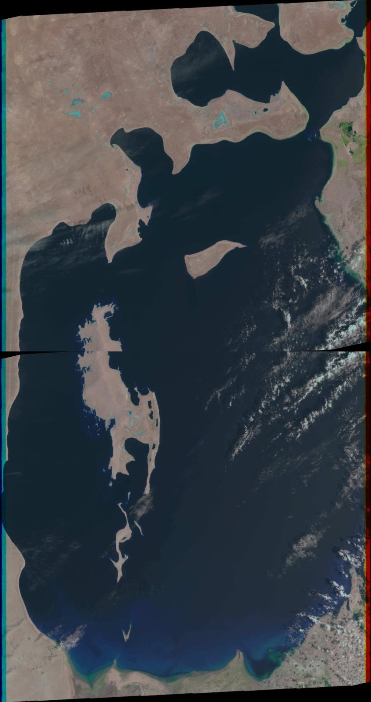
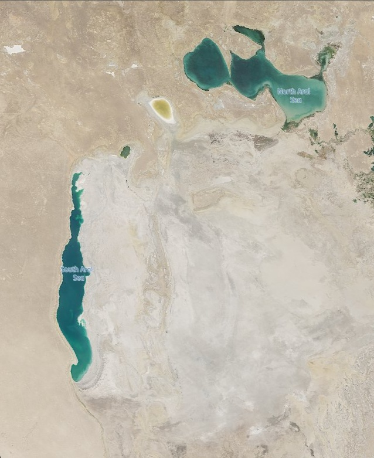

Il Mare Che
Scompare
Nel 1960 era il quarto lago più grande del mondo. Oggi è quasi completamente scomparso. Questa è la storia di un disastro ambientale senza precedenti, causato dall'uomo, visibile dallo spazio.
Da 68.000 km² a circa 8.300 km²
Intera industria ittica distrutta entro il 1980
Contro i 35 g/L di un mare normale
Cos'era il
Mar d'Aral
Il Mar d'Aral era un lago salato in Asia Centrale, al confine tra Kazakistan e Uzbekistan. Prima degli anni '60 aveva una superficie di circa 68.000 km², più grande dell'Italia centrale, ed era il quarto lago più grande del pianeta.
Le sue acque erano ricche di pesce: la regione produceva un sesto dell'intera produzione ittica sovietica. Le città costiere come Moynaq erano porti fiorenti, con flotte di pescherecci che solcavano le acque. Il lago regolava il microclima locale, moderando estati e inverni.
Tutto questo è quasi completamente scomparso nell'arco di sessant'anni.
Scopri le cause →

Stesso punto di vista, 39 anni di distanza
Guarda il lago scomparire
Una galleria di immagini satellitari Landsat e Sentinel-2 mostra il progressivo prosciugamento del Mar d'Aral anno dopo anno.
Apri la Galleria Satellitare →